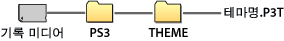

설정 > 테마 설정
테마 설정
배경 및 폰트 등 XMB™의 디자인에 관한 설정을 합니다.
테마
XMB™에 표시되는 아이콘이나 배경 등의 디자인을 설정합니다. 테마는 다음과 같은 방법으로 설정할 수 있습니다.
이미 설치되어 있는 테마를 선택
PS3™에 이미 설치되어 있는 테마를 선택합니다.
PS3™에서 다운로드
PS3™의  (PlayStation®Store) 또는
(PlayStation®Store) 또는  (인터넷 브라우저)의 웹 사이트에서 테마를 다운로드한 경우에는 다운로드 완료 후에 자동으로 설치됩니다.
(인터넷 브라우저)의 웹 사이트에서 테마를 다운로드한 경우에는 다운로드 완료 후에 자동으로 설치됩니다.
게임 디스크 또는 시판되는 BD 비디오 소프트웨어(BD-ROM)에서 설치
테마 파일이 수록되어 있는 디스크의 테마를 설정하고자 하는 경우에는  (게임)에서
(게임)에서  아이콘을 선택한 후 설정할 테마 파일을 선택합니다. 설치 완료 후에 자동으로 설정됩니다.
아이콘을 선택한 후 설정할 테마 파일을 선택합니다. 설치 완료 후에 자동으로 설정됩니다.
PC에서 다운로드/작성
PC를 사용해 웹 사이트에서 테마를 다운로드하거나 작성한 경우에는 기록 미디어 내에 [PS3]-[THEME]라는 이름의 폴더를 작성하고, 그 안에 테마 파일을 저장합니다. 테마 파일은 [.P3T]라는 확장자로 저장해 주십시오.

테마 파일이 저장되어 있는 기록 미디어를 설정하고  (설정) >
(설정) >  (테마 설정) > [테마] > [설치]를 선택하여 하드 디스크에 설치합니다.
(테마 설정) > [테마] > [설치]를 선택하여 하드 디스크에 설치합니다.
알아두기
- 테마 파일에 해당하는 아이콘 데이터가 포함되어 있지 않은 경우 임시 아이콘 또는 XMB™ 표준 아이콘이 표시됩니다.
- 테마 파일에 복수의 배경 데이터가 포함되어 있는 경우 테마의 배경이 랜덤하게 변경됩니다.
- 테마 파일을 작성하기 위한 개발자용 툴을 제공하고 있습니다(시판되는 이미지 편집 소프트웨어 등이 필요합니다). 상세한 사항은 각 지역 웹 사이트를 참조해 주십시오.
- 사용하시는 PS3™에 따라서는 기록 미디어를 사용하기 위해 별매의 USB 어댑터가 필요한 경우가 있습니다.
테마 삭제하기
삭제하려는 테마를 선택한 후  버튼을 눌러 [삭제]를 선택합니다.
버튼을 눌러 [삭제]를 선택합니다.
컬러
XMB™의 배경색을 설정합니다.
| 표준 | 표준 배경색을 설정합니다. |
|---|---|
| 각 컬러 | 선택한 색을 배경색으로 설정합니다. |
배경
테마에서 사용되고 있는 배경이나  (사진)에서 바탕화면으로 등록한 이미지 등을 XMB™의 배경으로 설정합니다.
(사진)에서 바탕화면으로 등록한 이미지 등을 XMB™의 배경으로 설정합니다.
| 밝기 | 배경의 밝기를 변경합니다. |
|---|---|
| 표준 | 표준 테마를 설정합니다. |
| 클래식 | [클래식]을 배경으로 설정합니다. |
| (테마명) | [테마]에서 설정하고 있는 테마의 배경을 설정합니다. |
| 바탕화면 | (사진)에서 바탕화면으로 등록한 이미지를 배경으로 설정합니다. |
폰트
XMB™ 또는  (친구)의 메시지 등에서 사용할 폰트를 설정합니다. 시스템 소프트웨어의 시스템 언어를 한국어/중국어 간체자/중국어 번체자로 설정한 경우에는 이 설정을 선택할 수 없습니다.
(친구)의 메시지 등에서 사용할 폰트를 설정합니다. 시스템 소프트웨어의 시스템 언어를 한국어/중국어 간체자/중국어 번체자로 설정한 경우에는 이 설정을 선택할 수 없습니다.
알아두기
시스템 소프트웨어의 시스템 언어에 따라 선택할 수 있는 폰트의 종류가 다릅니다.